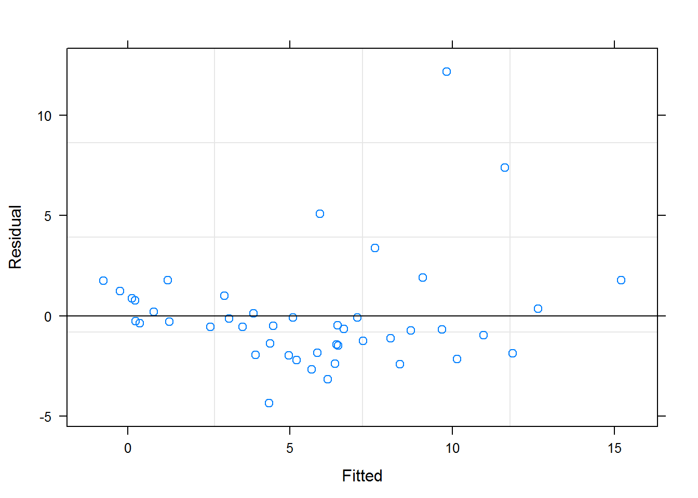
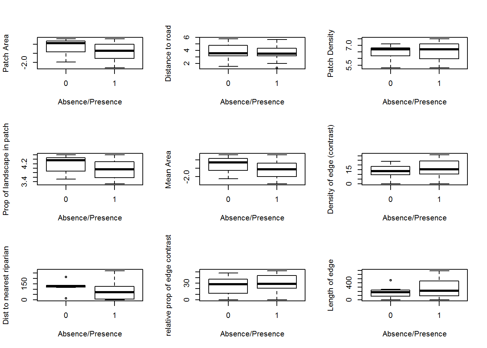
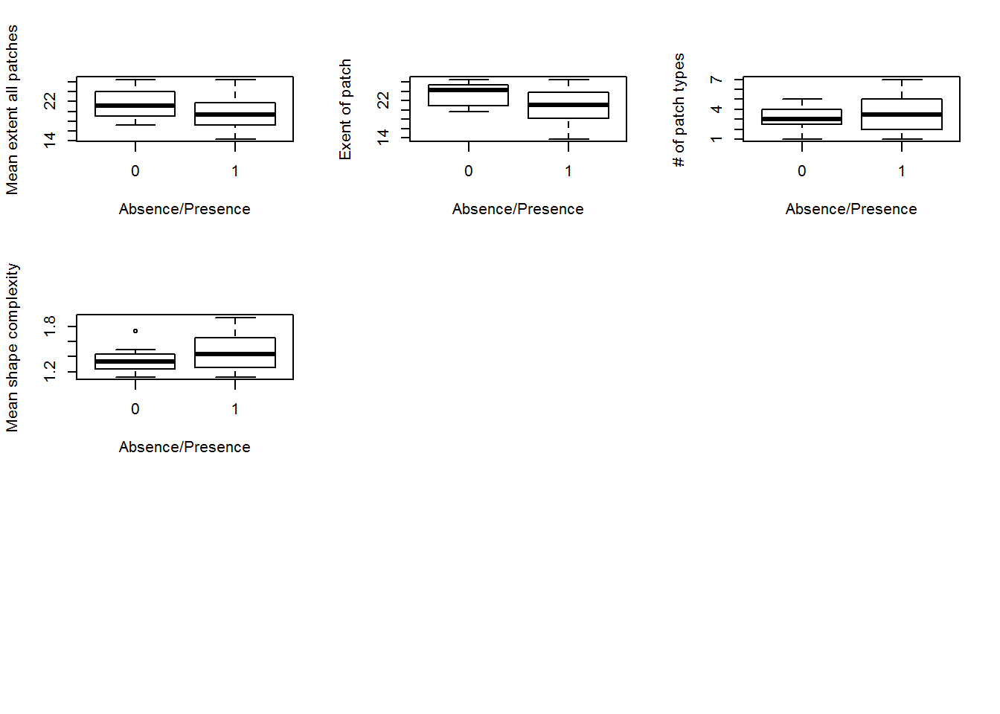
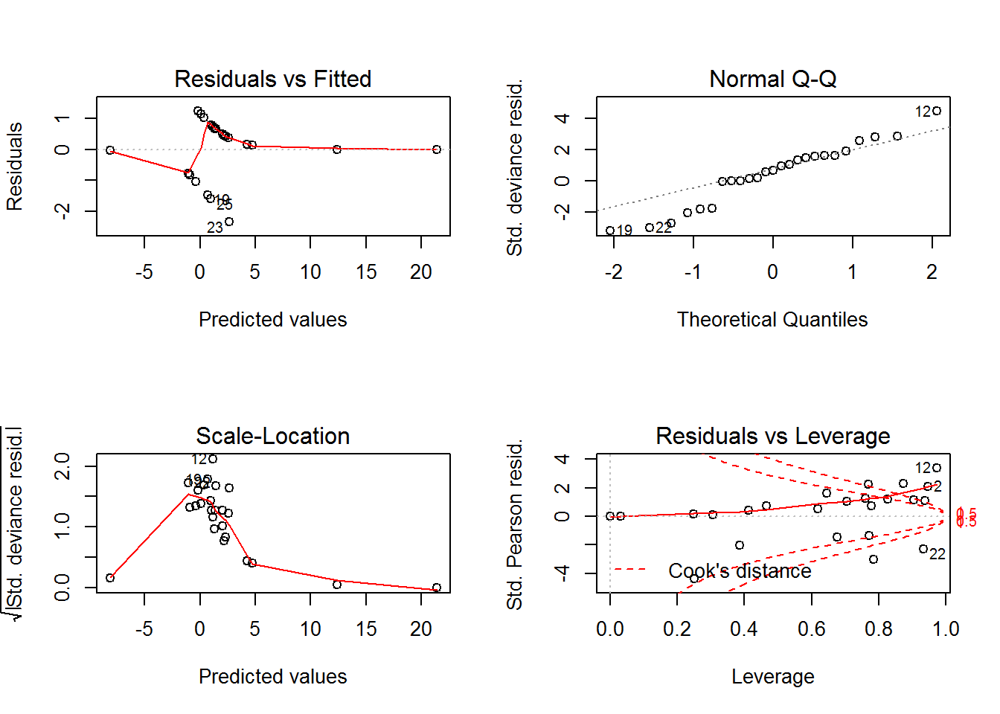
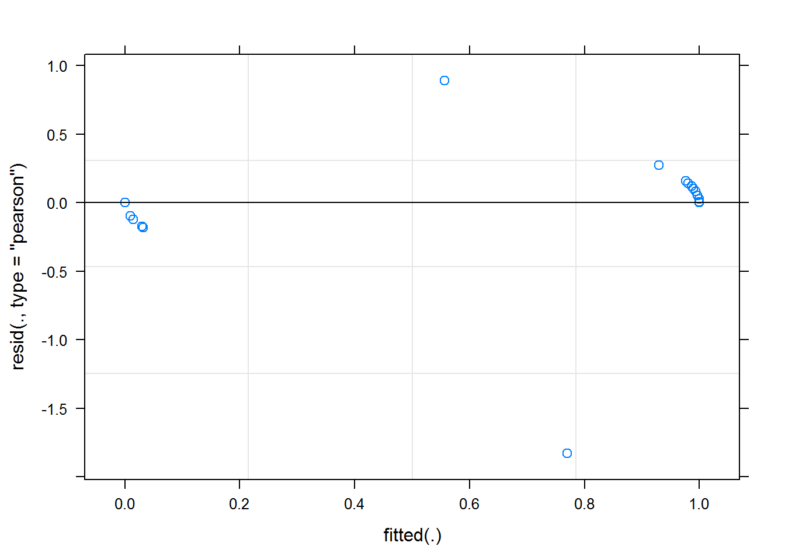
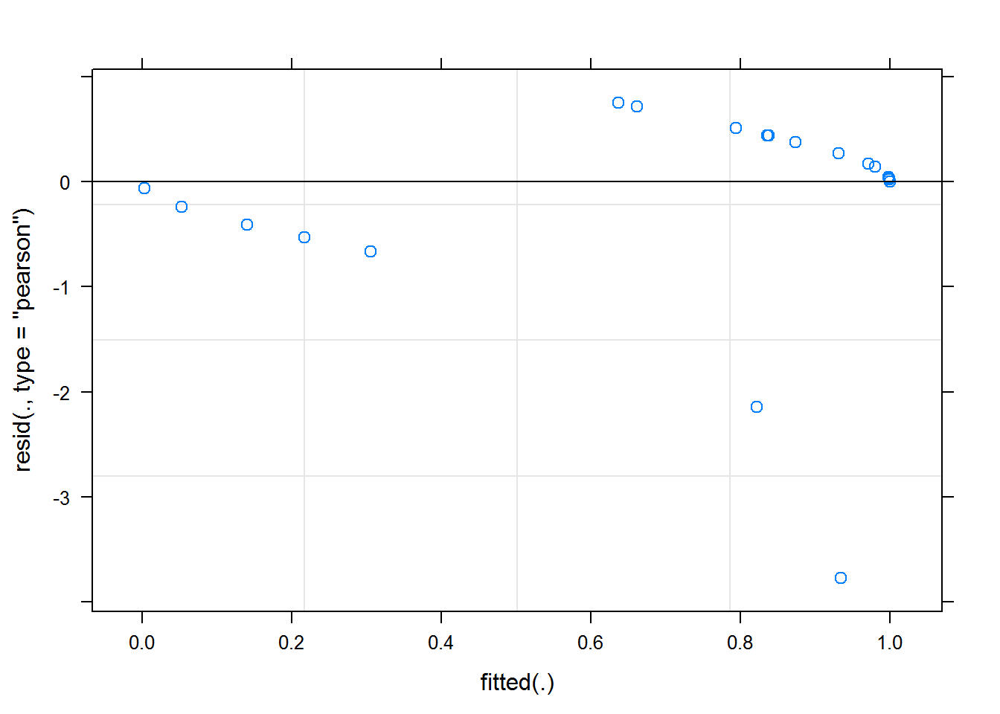

For those wishing to follow along with the R-based demo in class, click here for the companion R script for this lecture.
Also, click here for the PPT slides!
Sloth data provided by Neam KD, Lacher Jr. TE (2018) Multi-scale effects of habitat structure and landscape context on a vertebrate with limited dispersal ability (the brown-throated sloth, Bradypus variegatus ). Biotropica 50(4): 684-693. https://doi.org/10.1111/btp.12540
Dryad data package: Neam KD, Lacher Jr. TE (2018) Data from: Multi-scale effects of habitat structure and landscape context on a vertebrate with limited dispersal ability (the brown-throated sloth, Bradypus variegatus) . Dryad Digital Repository. https://doi.org/10.5061/dryad.n8tt5
The assumptions of generalised linear mixed models are a combination of the assumptions of GLMs and mixed models.
The observed y are independent, conditional on some predictors x
The response y come from a known distribution from the exponential family, with a known mean variance relationship
There is a uniform relationship between some known function of the mean of y and the predictors x and random effects z
Random effects z are independent of y
Random effects z are normally distributed
## Warning: package 'lme4' was built under R version 3.5.1First, let’s start with some nice neat data to show you what mixed effect models can do for you.
## Richness Beach
## Richness 1.0000000 0.4435666
## Beach 0.4435666 1.0000000
## Linear mixed model fit by REML ['lmerMod']
## Formula: Richness ~ NAP + (1 | Beach)
## Data: df.rikz
##
## REML criterion at convergence: 239.5
##
## Scaled residuals:
## Min 1Q Median 3Q Max
## -1.4227 -0.4848 -0.1576 0.2519 3.9794
##
## Random effects:
## Groups Name Variance Std.Dev.
## Beach (Intercept) 8.668 2.944
## Residual 9.362 3.060
## Number of obs: 45, groups: Beach, 9
##
## Fixed effects:
## Estimate Std. Error t value
## (Intercept) 6.5819 1.0958 6.007
## NAP -2.5684 0.4947 -5.192
##
## Correlation of Fixed Effects:
## (Intr)
## NAP -0.157Now… let’s get into a real ecological dataset.
## 'data.frame': 25 obs. of 25 variables:
## $ SITE_ID : Factor w/ 25 levels "CH01_A","CH01_P",..: 2 3 5 7 10 12 13 14 15 16 ...
## $ LONGITUDE : num 10.4 10.4 10.4 10.4 10.4 ...
## $ LATITUDE : num -84.6 -84.6 -84.6 -84.6 -84.6 ...
## $ LAND_USE : Factor w/ 2 levels "mixed_use","plantation": 1 1 2 2 1 1 1 1 1 1 ...
## $ patch_grou: Factor w/ 4 levels "A","B","C","D": 4 4 4 3 2 2 4 2 2 2 ...
## $ OCCURRENCE: int 1 1 1 1 1 1 1 1 1 1 ...
## $ PATCH_AREA: num 0.111 0.18 0.499 0.49 0.152 ...
## $ PATCH_GYRA: num 20.5 16.6 26.6 26.4 17.4 ...
## $ PATCH_SHAP: num 1.75 1.3 1.13 1.15 1.99 ...
## $ PLAND_SF : num 13.946 16.841 0.001 0.001 44.662 ...
## $ DIST_SEC_F: num 29.46 36.05 140.53 69.32 4.71 ...
## $ DIST_RIP_F: num 0.1 6.05 196.81 272.45 127.11 ...
## $ DIST_ROAD : num 8.87 183.36 71.49 33.77 28.59 ...
## $ PD : num 1805 1404 201 602 802 ...
## $ LPI : num 27.9 36.1 100 98.2 40.5 ...
## $ EDGE : num 691.2 451.2 0 94.2 268.8 ...
## $ AREA_WM : num 0.0939 0.1133 0.4987 0.4807 0.1598 ...
## $ GYRATE_WM : num 17.7 15.3 26.6 26 16.9 ...
## $ SHAPE_WM : num 1.92 1.6 1.13 1.16 1.55 ...
## $ CWED : num 970 614 0 189 345 ...
## $ ECON_AM : num 45.6 44.1 0 21.2 39.3 ...
## $ CONTAG : num 57 54.6 100 96.8 58.2 ...
## $ PR : int 5 4 1 2 3 3 5 4 2 4 ...
## $ SIDI : num 0.7009 0.6432 0 0.0152 0.6459 ...
## $ SIEI : num 0.8761 0.8576 0 0.0304 0.9688 ...Before we can use this data, we need to subset the data to include numeric variables only. This subsetted data will be used to run a for loop with a Shapiro-Wilk test to test for normality.
Shapiro-Wilk test to test for normality. Variables that don’t pass will need to be transformed before we can use them.
## var W p
## 1 PATCH_AREA 0.9165077 4.268389e-02
## 2 PATCH_GYRA 0.9502612 2.541452e-01
## 3 PATCH_SHAP 0.8448674 1.409494e-03
## 4 PLAND_SF 0.8976471 1.631077e-02
## 5 DIST_SEC_F 0.8245370 6.006726e-04
## 6 DIST_RIP_F 0.9266130 7.260889e-02
## 7 DIST_ROAD 0.7108146 1.022383e-05
## 8 PD 0.9121596 3.406572e-02
## 9 LPI 0.8924774 1.262879e-02
## 10 EDGE 0.9200689 5.141891e-02
## 11 AREA_WM 0.8798153 6.850219e-03
## 12 GYRATE_WM 0.9253893 6.805442e-02
## 13 SHAPE_WM 0.9228879 5.963444e-02
## 14 CWED 0.9058562 2.466055e-02
## 15 ECON_AM 0.9484017 2.307034e-01
## 16 CONTAG 0.8048832 2.745363e-04
## 17 PR 0.9498084 2.482435e-01
## 18 SIDI 0.8472424 1.561934e-03
## 19 SIEI 0.7671132 6.745032e-05We will also transform the data three ways and run the normality test. This method allows us to see if non-normal data prior to transformtion can be normalized through transforming it.
If you open the table we wrote above, you will find that 5 variables are never normal, 5 variables that are normal if log transformed, 7 variables that are normal without transformation, 1 variable that’s normal if square rooted, and 1 variable that is normal if squared.
Below we have transformed the necessary variables and saved them as their own object to be combined in the subsequent code.
Combine all the transformed and normal data into one along with the categorical variables and metadata we removed originally in the beginning. The “allsloth” data will be the dataset we work from.
## 'data.frame': 25 obs. of 19 variables:
## $ SITE_ID : Factor w/ 25 levels "CH01_A","CH01_P",..: 2 3 5 7 10 12 13 14 15 16 ...
## $ LONGITUDE : num 10.4 10.4 10.4 10.4 10.4 ...
## $ LATITUDE : num -84.6 -84.6 -84.6 -84.6 -84.6 ...
## $ LAND_USE : Factor w/ 2 levels "mixed_use","plantation": 1 1 2 2 1 1 1 1 1 1 ...
## $ patch_grou : Factor w/ 4 levels "A","B","C","D": 4 4 4 3 2 2 4 2 2 2 ...
## $ OCCURRENCE : int 1 1 1 1 1 1 1 1 1 1 ...
## $ logPATCH_AREA: num -2.198 -1.716 -0.696 -0.714 -1.885 ...
## $ logDIST_ROAD : num 2.18 5.21 4.27 3.52 3.35 ...
## $ logPD : num 7.5 7.25 5.3 6.4 6.69 ...
## $ logLPI : num 3.33 3.59 4.61 4.59 3.7 ...
## $ logAREA_WM : num -2.366 -2.178 -0.696 -0.733 -1.834 ...
## $ sqrtCWED : num 31.1 24.8 0 13.7 18.6 ...
## $ DIST_RIP_F : num 0.1 6.05 196.81 272.45 127.11 ...
## $ ECON_AM : num 45.6 44.1 0 21.2 39.3 ...
## $ EDGE : num 691.2 451.2 0 94.2 268.8 ...
## $ GYRATE_WM : num 17.7 15.3 26.6 26 16.9 ...
## $ PATCH_GYRA : num 20.5 16.6 26.6 26.4 17.4 ...
## $ PR : num 5 4 1 2 3 3 5 4 2 4 ...
## $ SHAPE_WM : num 1.92 1.6 1.13 1.16 1.55 ...Boxplots for all variables in relation to Sloth Presence/Absence

We want to know if any of these variables have an effect on presence/absence of sloths. Let’s start with a general linear model to explore how sloth presence is a function of all our numeric variables.
##
## Call:
## glm(formula = OCCURRENCE ~ logPATCH_AREA + LAND_USE + logDIST_ROAD +
## logPD + logLPI + logAREA_WM + sqrtCWED + DIST_RIP_F + ECON_AM +
## EDGE + GYRATE_WM + PATCH_GYRA + PR + SHAPE_WM, family = binomial,
## data = allsloth)
##
## Deviance Residuals:
## Min 1Q Median 3Q Max
## -2.3400 -0.0243 0.4336 0.6905 1.2407
##
## Coefficients:
## Estimate Std. Error z value Pr(>|z|)
## (Intercept) 195.945784 267.964646 0.731 0.465
## logPATCH_AREA -38.339788 34.484681 -1.112 0.266
## LAND_USEplantation -11.262983 9.554315 -1.179 0.238
## logDIST_ROAD 0.434644 0.897102 0.484 0.628
## logPD -15.966172 19.725186 -0.809 0.418
## logLPI 14.946616 28.582318 0.523 0.601
## logAREA_WM 67.631360 65.333588 1.035 0.301
## sqrtCWED 0.252461 0.813674 0.310 0.756
## DIST_RIP_F -0.007093 0.018879 -0.376 0.707
## ECON_AM 0.200762 0.353373 0.568 0.570
## EDGE 0.104386 0.100029 1.044 0.297
## GYRATE_WM -1.778528 2.863770 -0.621 0.535
## PATCH_GYRA -2.267971 3.118349 -0.727 0.467
## PR 3.319122 5.705280 0.582 0.561
## SHAPE_WM -39.875707 47.309311 -0.843 0.399
##
## (Dispersion parameter for binomial family taken to be 1)
##
## Null deviance: 29.648 on 24 degrees of freedom
## Residual deviance: 20.578 on 10 degrees of freedom
## AIC: 50.578
##
## Number of Fisher Scoring iterations: 8
This test will allow us to evaluate our glm and defines how well our model fits depending on the difference between the model and the observed data.
This is one approach for binary data. Based on our p-value, this model appears to be “ok” and shows that some of our covariates could potentially be significant. But, we haven’t accounted for random effects to explain any variance in the response, and the way we can do this with our binary sloth data is to implement a mixed effects model.
##
## Hosmer and Lemeshow goodness of fit (GOF) test
##
## data: allsloth$OCCURRENCE, fitted(glm.sloth)
## X-squared = 14.472, df = 8, p-value = 0.07025To fit a model for the presence or absence of sloths, we will use glmer with family=binomial from the “lmer” package. Using a lmer function would not allow us to define family as “binomial”– which is what we are looking at with sloth presence/absence. But first, we need to scale the data and identify any collinearity among the variables.
Identifying collinearity for our numeric variables only
## logPATCH_AREA logDIST_ROAD logPD logLPI logAREA_WM sqrtCWED
## logPATCH_AREA TRUE FALSE TRUE TRUE TRUE TRUE
## logDIST_ROAD FALSE TRUE FALSE FALSE FALSE FALSE
## logPD TRUE FALSE TRUE TRUE TRUE TRUE
## logLPI TRUE FALSE TRUE TRUE TRUE TRUE
## logAREA_WM TRUE FALSE TRUE TRUE TRUE TRUE
## sqrtCWED TRUE FALSE TRUE TRUE TRUE TRUE
## DIST_RIP_F FALSE FALSE FALSE TRUE TRUE FALSE
## ECON_AM FALSE FALSE TRUE TRUE TRUE TRUE
## EDGE TRUE FALSE TRUE TRUE TRUE TRUE
## GYRATE_WM TRUE FALSE TRUE TRUE TRUE TRUE
## PATCH_GYRA TRUE FALSE TRUE TRUE TRUE TRUE
## PR TRUE FALSE TRUE TRUE TRUE TRUE
## SHAPE_WM TRUE FALSE TRUE TRUE TRUE TRUE
## DIST_RIP_F ECON_AM EDGE GYRATE_WM PATCH_GYRA PR SHAPE_WM
## logPATCH_AREA FALSE FALSE TRUE TRUE TRUE TRUE TRUE
## logDIST_ROAD FALSE FALSE FALSE FALSE FALSE FALSE FALSE
## logPD FALSE TRUE TRUE TRUE TRUE TRUE TRUE
## logLPI TRUE TRUE TRUE TRUE TRUE TRUE TRUE
## logAREA_WM TRUE TRUE TRUE TRUE TRUE TRUE TRUE
## sqrtCWED FALSE TRUE TRUE TRUE TRUE TRUE TRUE
## DIST_RIP_F TRUE FALSE FALSE FALSE FALSE FALSE FALSE
## ECON_AM FALSE TRUE FALSE TRUE FALSE FALSE TRUE
## EDGE FALSE FALSE TRUE TRUE TRUE TRUE TRUE
## GYRATE_WM FALSE TRUE TRUE TRUE TRUE TRUE TRUE
## PATCH_GYRA FALSE FALSE TRUE TRUE TRUE TRUE TRUE
## PR FALSE FALSE TRUE TRUE TRUE TRUE TRUE
## SHAPE_WM FALSE TRUE TRUE TRUE TRUE TRUE TRUEBecause we only have 25 observations per variable, we bootstrap the data to get more data to account for singularity.
Singularity is often a problem with mixed effect models with highly correlated data or not enough data.
Now we run a loop for all of the following iterations
We create a function to run all of our interested formulas. Warning for running this formula– if data comes back with errors, it will crash the loop and need to address those formulas or write them out.
Keep in mind, this is considered “data mining.” Investigating this many models at once will usually return variables that are “significant.” This is bad practice in science.
Extract AIC values to identify best fit models from our iteration.
Convert the list to a dataframe for ease of use and identification of model.
## model aic index
## 10 OCCURRENCE ~ logDIST_ROAD * DIST_RIP_F * PR 48.29438 10
## 6 OCCURRENCE ~ logDIST_ROAD * DIST_RIP_F * GYRATE_WM 80.25776 6
## 4 OCCURRENCE ~ logDIST_ROAD * DIST_RIP_F * logAREA_WM 85.37672 4
## 12 OCCURRENCE ~ logDIST_ROAD * DIST_RIP_F * SHAPE_WM 85.54648 12
## 8 OCCURRENCE ~ logDIST_ROAD * DIST_RIP_F * PATCH_GYRA 88.85471 8
## 11 OCCURRENCE ~ logDIST_ROAD * DIST_RIP_F + PR 103.81272 11
## random daic
## 10 PatchGroup 0.00000
## 6 PatchGroup 31.96337
## 4 PatchGroup 37.08234
## 12 PatchGroup 37.25209
## 8 PatchGroup 40.56032
## 11 PatchGroup 55.51833So what does the best model look like?
## Generalized linear mixed model fit by maximum likelihood (Laplace
## Approximation) [glmerMod]
## Family: binomial ( logit )
## Formula: OCCURRENCE ~ logDIST_ROAD * DIST_RIP_F * PR + (1 | LAND_USE)
## Data: allsloth
##
## AIC BIC logLik deviance df.resid
## 48.3 71.7 -15.1 30.3 91
##
## Scaled residuals:
## Min 1Q Median 3Q Max
## -1.83046 0.00000 0.00479 0.10363 0.89291
##
## Random effects:
## Groups Name Variance Std.Dev.
## LAND_USE (Intercept) 60.83 7.799
## Number of obs: 100, groups: LAND_USE, 2
##
## Fixed effects:
## Estimate Std. Error z value Pr(>|z|)
## (Intercept) -4.8435 6.3521 -0.762 0.44576
## logDIST_ROAD 1.0124 1.9692 0.514 0.60717
## DIST_RIP_F -9.7892 4.6718 -2.095 0.03614 *
## PR -7.0951 2.5757 -2.755 0.00588 **
## logDIST_ROAD:DIST_RIP_F -13.7165 4.6043 -2.979 0.00289 **
## logDIST_ROAD:PR -0.7647 1.8579 -0.412 0.68063
## DIST_RIP_F:PR -14.6826 5.8270 -2.520 0.01174 *
## logDIST_ROAD:DIST_RIP_F:PR 0.1940 2.0854 0.093 0.92588
## ---
## Signif. codes: 0 '***' 0.001 '**' 0.01 '*' 0.05 '.' 0.1 ' ' 1
##
## Correlation of Fixed Effects:
## (Intr) lgDIST_ROAD DIST_RIP_F PR
## lgDIST_ROAD -0.063
## DIST_RIP_F 0.158 -0.711
## PR 0.393 -0.102 0.445
## lgDIST_ROAD:DIST_RIP_F 0.324 -0.308 0.673 0.521
## lDIST_ROAD:P 0.194 0.683 -0.413 0.064
## DIST_RIP_F: 0.277 -0.635 0.918 0.531
## lDIST_ROAD:DIST_RIP_F: -0.198 0.134 0.095 -0.328
## lgDIST_ROAD:DIST_RIP_F lDIST_ROAD:P DIST_RIP_F:
## lgDIST_ROAD
## DIST_RIP_F
## PR
## lgDIST_ROAD:DIST_RIP_F
## lDIST_ROAD:P 0.193
## DIST_RIP_F: 0.813 -0.220
## lDIST_ROAD:DIST_RIP_F: 0.081 0.037 -0.013
## convergence code: 0
## Model failed to converge with max|grad| = 0.0610467 (tol = 0.001, component 1)## Generalized linear mixed model fit by maximum likelihood (Laplace
## Approximation) [glmerMod]
## Family: binomial ( logit )
## Formula:
## OCCURRENCE ~ logDIST_ROAD * DIST_RIP_F * GYRATE_WM + (1 | LAND_USE)
## Data: allsloth
##
## AIC BIC logLik deviance df.resid
## 80.3 103.7 -31.1 62.3 91
##
## Scaled residuals:
## Min 1Q Median 3Q Max
## -3.7763 0.0000 0.0279 0.3796 0.7556
##
## Random effects:
## Groups Name Variance Std.Dev.
## LAND_USE (Intercept) 20.49 4.527
## Number of obs: 100, groups: LAND_USE, 2
##
## Fixed effects:
## Estimate Std. Error z value Pr(>|z|)
## (Intercept) -0.75168 3.31600 -0.227 0.82067
## logDIST_ROAD 1.36639 0.63636 2.147 0.03178 *
## DIST_RIP_F -2.00942 0.74332 -2.703 0.00687 **
## GYRATE_WM 0.09988 0.60320 0.166 0.86848
## logDIST_ROAD:DIST_RIP_F -5.68677 1.90678 -2.982 0.00286 **
## logDIST_ROAD:GYRATE_WM 1.18666 0.80166 1.480 0.13880
## DIST_RIP_F:GYRATE_WM 5.99374 2.07665 2.886 0.00390 **
## logDIST_ROAD:DIST_RIP_F:GYRATE_WM -0.91318 0.92154 -0.991 0.32172
## ---
## Signif. codes: 0 '***' 0.001 '**' 0.01 '*' 0.05 '.' 0.1 ' ' 1
##
## Correlation of Fixed Effects:
## (Intr) lgDIST_ROAD DIST_RIP_F GYRATE
## lgDIST_ROAD -0.051
## DIST_RIP_F -0.006 -0.409
## GYRATE_WM -0.008 -0.192 -0.195
## lgDIST_ROAD:DIST_RIP_F 0.174 -0.256 0.297 0.062
## lDIST_ROAD:G -0.200 -0.037 0.067 -0.194
## DIST_RIP_F: -0.203 0.387 -0.287 -0.109
## lDIST_ROAD:DIST_RIP_F: 0.142 -0.336 -0.220 -0.012
## lgDIST_ROAD:DIST_RIP_F lDIST_ROAD:G DIST_RIP_F:
## lgDIST_ROAD
## DIST_RIP_F
## GYRATE_WM
## lgDIST_ROAD:DIST_RIP_F
## lDIST_ROAD:G -0.769
## DIST_RIP_F: -0.920 0.734
## lDIST_ROAD:DIST_RIP_F: 0.407 -0.442 -0.525